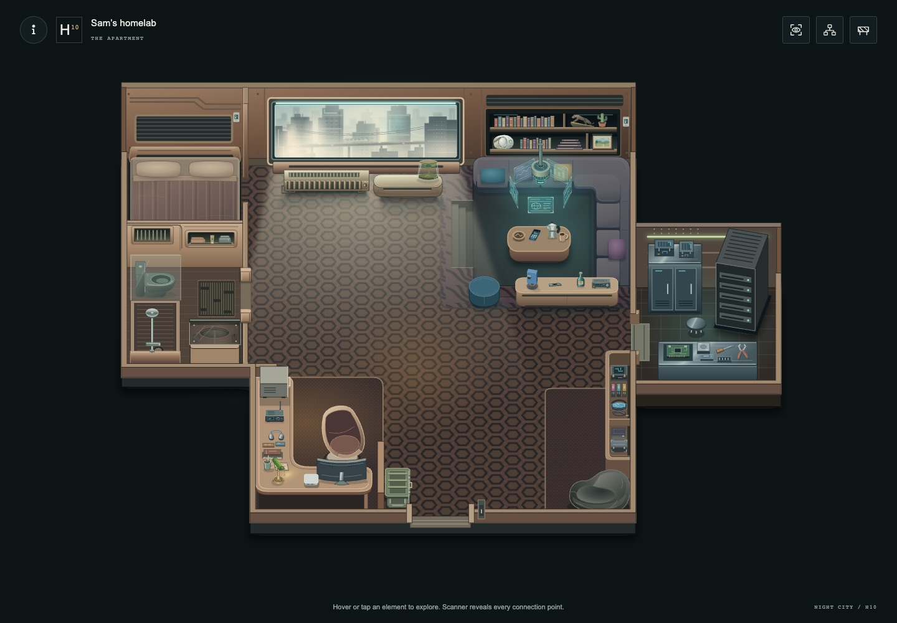
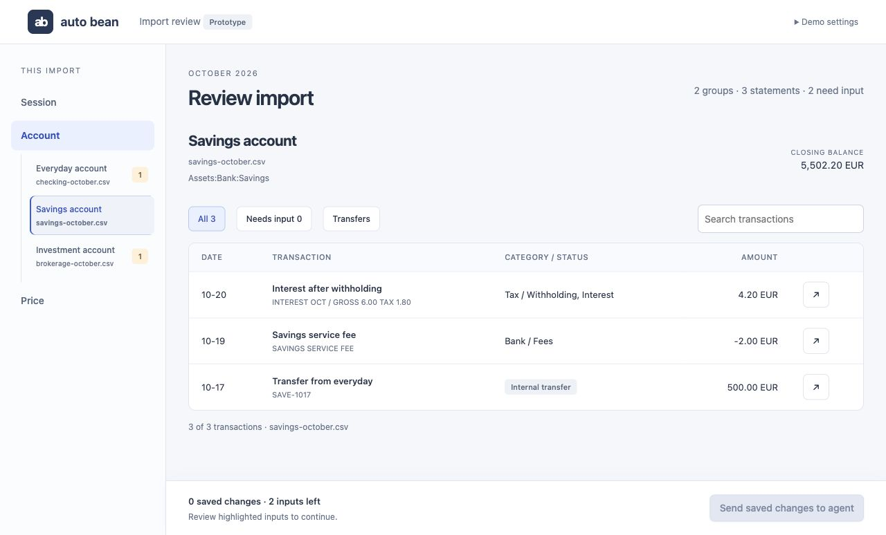
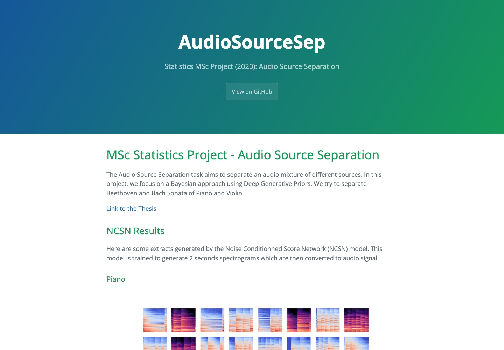

My first homelab
An interactive look back at my first homelab: the systems I built, how they fit together, and what I learned along the way. A snapshot of this chapter before I move to a new home.
ExploreApplied AI Engineer at OpenAI
May 2026 — Present
I’m an engineer building AI and data systems, with experience across defense, manufacturing and energy.
View experience
An interactive look back at my first homelab: the systems I built, how they fit together, and what I learned along the way. A snapshot of this chapter before I move to a new home.
Explore
A Codex plugin for importing statements and managing Beancount ledgers.
GitHubMay 2026 — Present
OpenAI
2022 — 2026
Palantir
2020 — 2022
Dalkia
2019–2020
Imperial College London

MSc research: Audio source separation Separating piano and violin with deep generative models and Bayesian sampling. Python TensorFlow 2 / Keras TensorFlow Probability TensorBoard2016–2020
École Centrale Paris
2014–2016
Lycée Lakanal
An interactive look back at my first homelab: the systems I built, how they fit together, and what I learned along the way. A snapshot of this chapter before I move to a new home.
A Codex plugin for importing statements and managing Beancount ledgers.